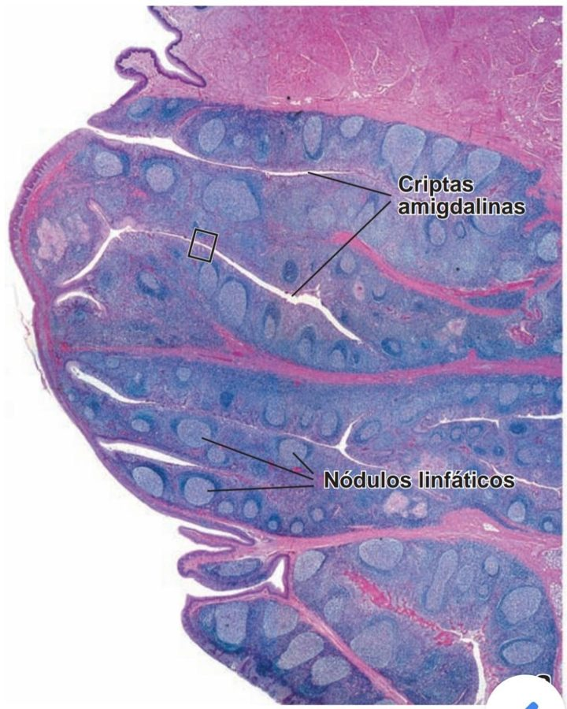
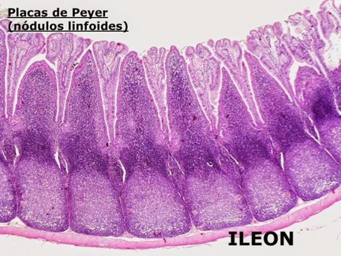
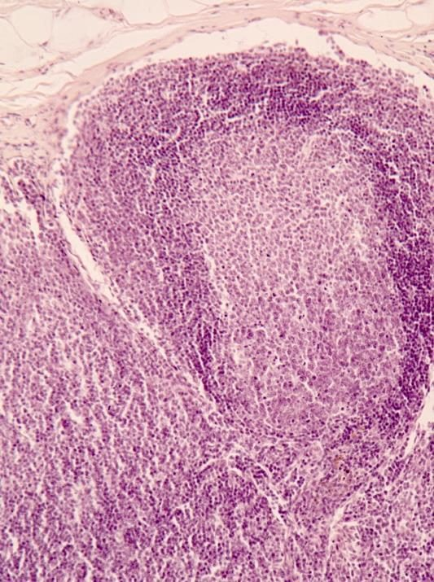
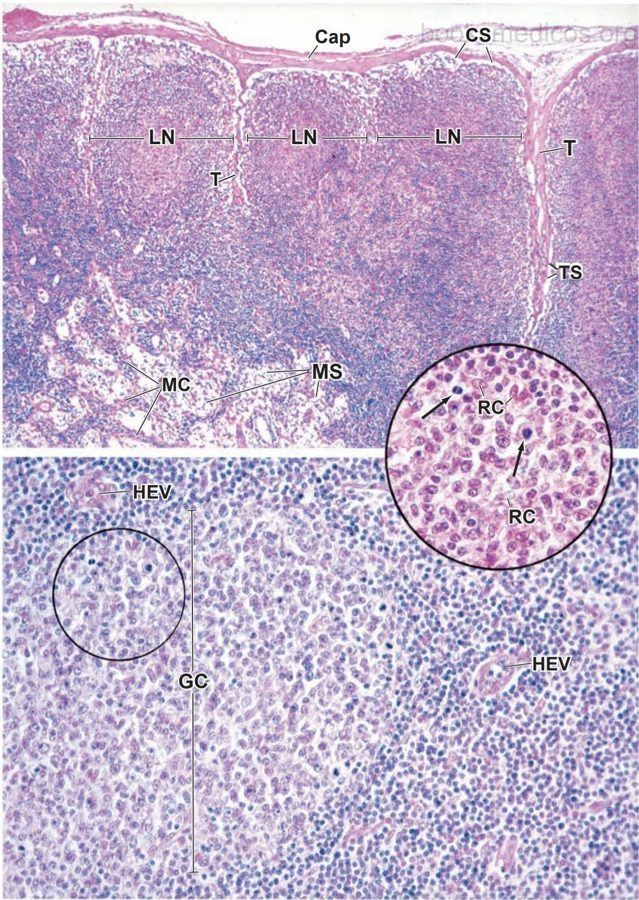
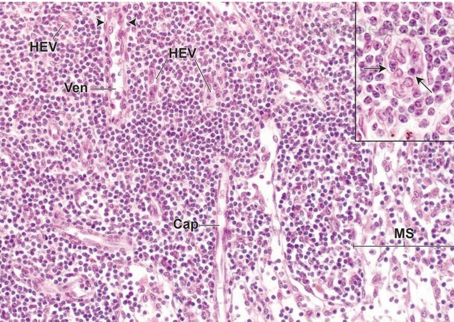
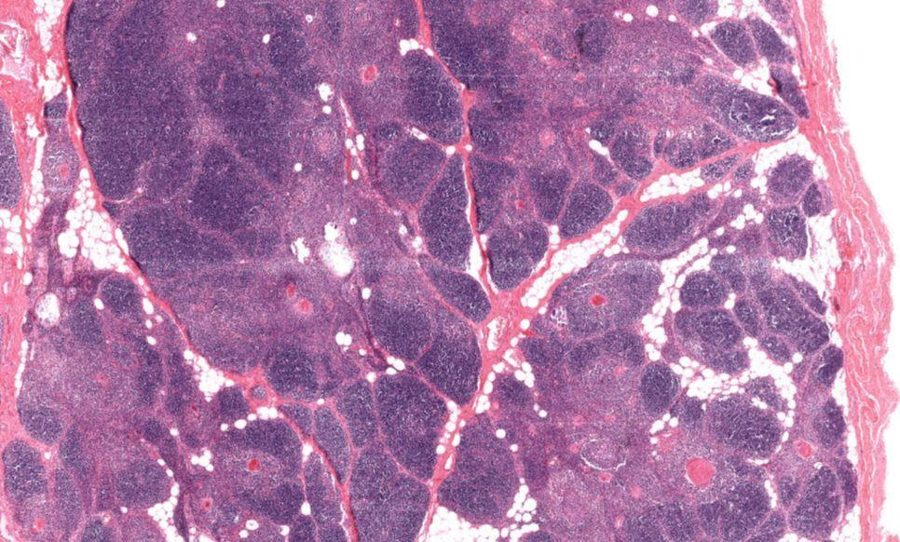
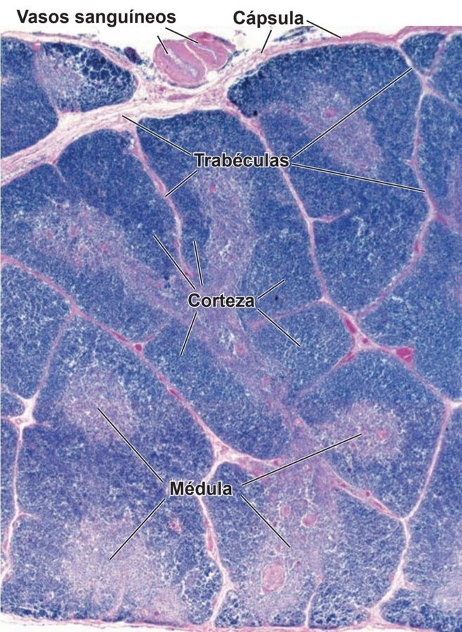
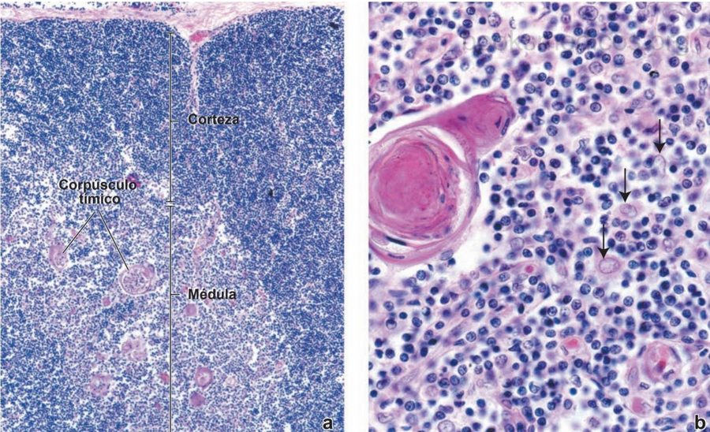
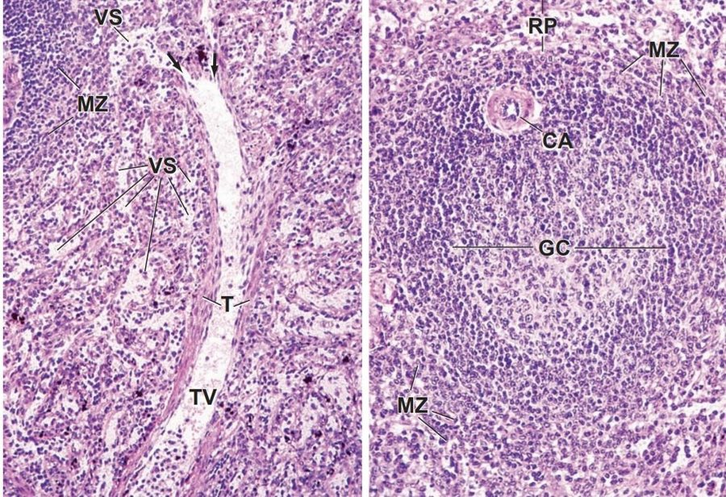
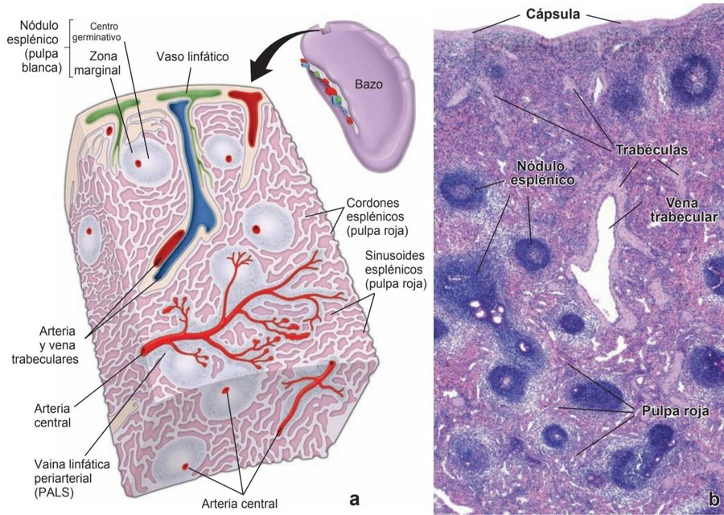

ClinicusMed · Dossiê Clinicus — Padrão de Excelência

| Tipo | Característica |
|---|---|
| Imunidade Inespecífica | 1ª linha de defesa. Barreiras físicas (pele, mucosas) + células fagocíticas (neutrófilos, macrófagos) + NK + proteínas do complemento. Ação RÁPIDA, mas não específica |
| Imunidade Específica | Resposta direcionada contra antígenos específicos, atua quando a inespecífica falha. Envolve linfócitos T e B. Gera MEMÓRIA imunológica |
| Divisão da Imunidade Específica | Mecanismo |
|---|---|
| Humoral | Mediada por anticorpos (linfócitos B → plasmócitos) |
| Celular | Linfócitos T citotóxicos, auxiliadores e reguladores |

| Célula | Função |
|---|---|
| Reticulares | Formam rede de fibras reticulares (colágeno tipo III) |
| Dendríticas | Apresentam antígenos |
| Macrófagos | Fagocitam restos celulares e microrganismos |
| Epiteliorreticulares (no Timo) | Estruturam e participam da seleção de linfócitos T |

| Tipo | Função | Órgãos |
|---|---|---|
| Primários | Onde os linfócitos SE FORMAM e AMADURECEM | Medula Óssea (hematopoiese, maturação de linfócitos B, reserva de células mãe) + Timo (maturação de linfócitos T) |
| Secundários (periféricos) | Onde ocorre a resposta imune EFETIVA | Linfonodos, Baço, MALT (tonsilas, placas de Peyer, apêndice, BALT, SALT) |
| Tipo | Característica |
|---|---|
| Difuso | Células dispersas em mucosas (ex: intestino) |
| Nodular | Acúmulo de linfócitos formando nódulos — Primário (sem centro germinativo) ou Secundário (COM centro germinativo ATIVO) |



| Região | Característica |
|---|---|
| Córtex | Folículos linfoides (linfócitos B) — primários e secundários (secundário TEM centro germinativo, zona mais clara) |
| Paracórtex | Zona interna entre córtex e medula, rica em Linfócitos T. Também tem células dendríticas apresentadoras de antígenos |
| Medula | Cordões medulares com plasmócitos e macrófagos. Sinusoides medulares para circulação da linfa |


| Região | Característica |
|---|---|
| Córtex | Linfócitos T imaturos (timócitos) |
| Medula | Células epiteliorreticulares + Corpúsculos de Hassall (células reticulares tipo XI) |


| Região | Característica |
|---|---|
| Polpa Branca | Rica em linfócitos — função IMUNIDADE |
| Polpa Vermelha | Hemocatarese (remoção de hemácias envelhecidas). É onde ocorre a filtração da vascularização |
| Aspecto | Linfonodo | Timo | Baço |
|---|---|---|---|
| Tipo | Secundário | Primário | Secundário |
| Filtra | Linfa | — | Sangue |
| Centro germinativo | SIM (folículo secundário) | NÃO | SIM (polpa branca) |
| Célula-chave | Linfócitos B (córtex) + T (paracórtex) | Linfócitos T (timócitos) | Linfócitos B+T (branca) + hemocatarese (vermelha) |
| Involui com idade? | Não classicamente | SIM (vira tecido adiposo) | Não classicamente |
Vamos acompanhar um paciente submetido a esplenectomia de urgência após acidente automobilístico, relacionando o caso à histologia do baço. O caso evolui em 3 níveis — clica em cada um pra ver como as coisas vão se desenrolando.
A Clinicus selecionou este conteúdo para complementar seu estudo. Não substitui a leitura do resumo — o resumo ensina, o vídeo reforça.
Carregando recomendações...
O sistema guarda, no seu navegador, quais cards você já sabe bem e quais precisam voltar mais cedo — cada vez que você avalia um card, ele recalcula quando ele deve voltar.
10 questões, do mais básico ao mais puxado. Escolhe uma alternativa, depois clica em "Ver comentário completo" — vale a pena ler até quando você acerta, porque o comentário explica cada alternativa, não só a certa.
Todas as imagens desse capítulo, reunidas num só lugar pra revisão rápida.